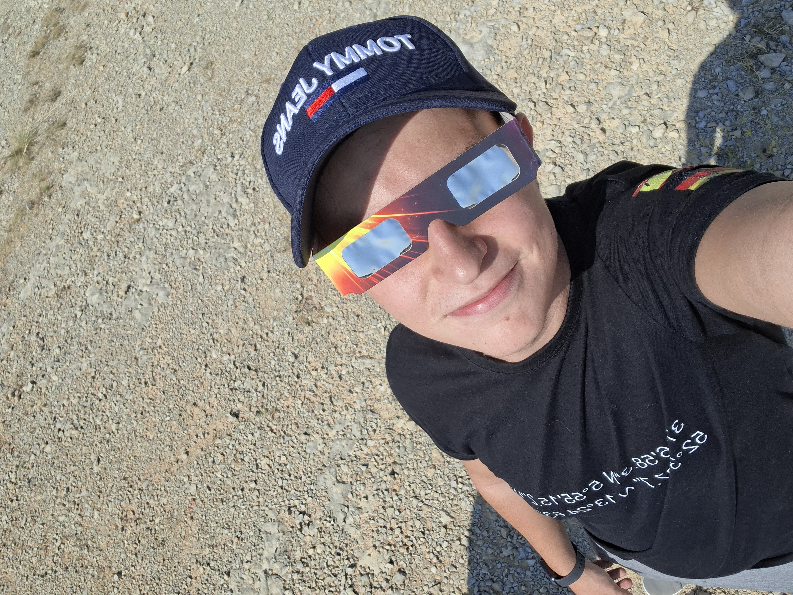
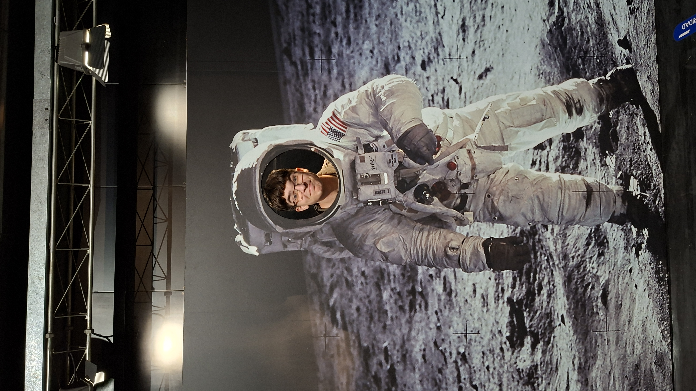
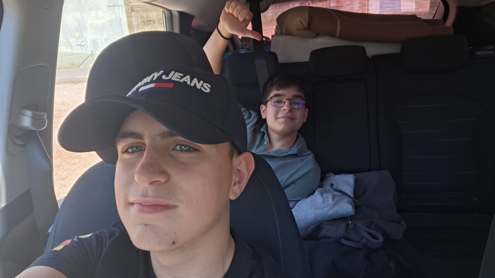

Somos un equipo de apasionados de la astronomía, cazadores de sombras y amantes del firmamento. Nos fascina ese instante mágico en el que el día se vuelve noche y el cosmos nos recuerda lo pequeños, y a la vez afortunados, que somos. Eclipsarium nació con un propósito claro: ser tu brújula en el mapa de los eventos celestes más impresionantes del planeta, compartiendo ciencia, emoción y guías precisas para que nunca te pierdas el próximo gran alineamiento cósmico.
Conoce a nuestro equipo
|
 Guillermo Jiménez Ramírez es un profesional formado en la prestigiosa Universidad de Sevilla, obteniendo su doctorado en Ingeniería de la Ciberseguridad. Allí perfeccionó sus habilidades en protección digital. Impulsado por una profunda pasión por la astronomía, decidió unir fuerzas con su gran amigo Alfonso para dar vida a un proyecto único. Juntos crearon esta innovadora página web, fusionando un entorno digital totalmente seguro con la fascinación por el cosmos. Hoy en día, lidera el desarrollo técnico de la plataforma para asegurar que la comunidad astronómica explore el universo de forma segura. |
 Alfonso Pajares López, es un graduado en ingeniería aeroespacial con una mente brillante orientada al diseño y la exploración del cosmos. Su profundo conocimiento técnico y su pasión por la astronomía lo llevaron a unirse con su amigo para materializar este gran proyecto digital. Mientras su socio asegura la robustez cibernética de la web, él aporta la rigurosidad científica y la visión espacial que define el contenido de la plataforma. Juntos han logrado que este portal sea el punto de encuentro perfecto para los amantes del universo |

Eclipsarium empezó como una locura de dos amigos de toda la vida que se subían al tejado de su pueblo con un telescopio
viejo y un par de cervezas a arreglar el universo.
Cansados de sus trabajos de oficina y de vivir en la rutina, decidieron mandar todo a paseo para montar una startup y
acercar las estrellas a todo el mundo a través del turismo astronómico. Le pusieron Eclipsarium por aquel eclipse total
que vieron juntos de chavales, el momento exacto en el que prometieron que, tarde o temprano, acabarían viviendo de
su verdadera pasión: mirar al cielo.